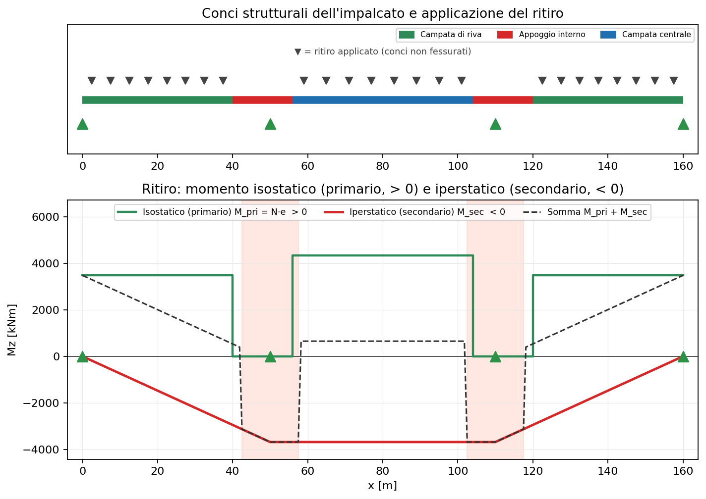

31 - Ritiro nelle sezioni composte acciaio-calcestruzzo
Il ritiro del calcestruzzo è una deformazione impressa che, nelle sezioni composte, genera stati di sforzo anche in assenza di carichi esterni. La teoria corrente scorpora l'effetto del ritiro in due contributi distinti — primario (isostatico) e secondario (iperstatico) — che vanno trattati separatamente. Questa pagina spiega la teoria e mostra come modellarla in beamfeapy con le deformazioni imposte (analogia termica).
Riferimenti: EN 1992-1-1 §3.1.4 (ritiro e viscosità), EN 1994-2 §5.4.2.2 (modulo efficace e ritiro), §5.4.2.3 (effetti della fessurazione).
1. Perché il ritiro genera sollecitazioni
La soletta in calcestruzzo "vorrebbe" accorciarsi della deformazione di ritiro libero $\varepsilon_{cs}$, ma è connessa con i pioli alla trave d'acciaio, che si oppone. Questo impedimento mutuo produce:
- una trazione residua nel calcestruzzo (meno libero di ritirarsi),
- una compressione e una flessione indotte nell'acciaio,
- in una struttura iperstatica, anche reazioni e momenti aggiuntivi.
La chiave è che la soletta è eccentrica rispetto al baricentro della sezione composta: la forza di richiamo del ritiro, applicata nel baricentro della soletta, equivale a una forza assiale più un momento $N \cdot e$.
2. Ritiro libero e modulo efficace (viscosità)
Il ritiro è un fenomeno lento: agisce insieme alla viscosità. Si usa quindi un modulo efficace del calcestruzzo
$$ E_{c,\text{eff}} = \frac{E_{cm}}{1 + \psi_L \, \varphi(t,t_0)} $$
con $\psi_L = 0.55$ per il ritiro (EN 1994-2 §5.4.2.2). Il rapporto di omogeneizzazione a lungo termine è $n_L = E_a / E_{c,\text{eff}}$.
Con $E_{cm} = 33$ GPa, $\varphi = 2.0$, $\psi_L = 0.55$:
$$ E_{c,\text{eff}} = \frac{33}{1 + 0.55 \cdot 2.0} = 15.7 \ \text{GPa}, \qquad n_L = \frac{210}{15.7} \approx 13.4 $$
3. Effetto primario (isostatico): $N$ e $N\cdot e$
Si usa il metodo del vincolo e rilascio:
- Vincolo. Si impedisce alla soletta di ritirarsi applicando al solo calcestruzzo una forza di trazione nel suo baricentro:
$$ N_{cs} = \varepsilon_{cs} \, E_{c,\text{eff}} \, A_c $$
- Rilascio. Questa forza non esiste realmente: la si rilascia applicando $-N_{cs}$ nel baricentro della soletta, sulla sezione composta. Poiché il baricentro della soletta è eccentrico di $e$ rispetto al baricentro composto, ciò equivale a:
$$ N = N_{cs}, \qquad M_{\text{pri}} = N_{cs}\cdot e $$
La somma vincolo + rilascio è uno stato tensionale autoequilibrato sulla sezione: la risultante $N$ e il momento $M$ della trave sono nulli in condizioni isostatiche. In una struttura semplicemente appoggiata questo stato non genera reazioni: la trave si limita ad accorciarsi e a inflettersi, con deformazioni libere
$$ \varepsilon_0 = \frac{N_{cs}}{(EA){\text{comp}}}, \qquad \kappa_0 = \frac{M $$}}}{(EI)_{\text{comp}}
valutate con le rigidezze della sezione composta omogeneizzata ($n_L$).
In sintesi: il primario è ciò che si ottiene considerando l'impalcato come semplicemente appoggiato e applicando il ritiro (analogia termica). Le sollecitazioni risultanti della trave sono nulle; ciò che resta è lo stato autoequilibrato di sezione $N_{cs}$ e $N_{cs}\cdot e$.
4. Effetto secondario (iperstatico)
In una trave continua la curvatura $\kappa_0$ non è libera: gli appoggi intermedi impediscono l'inflessione e nascono momenti secondari $M_{\text{sec}}$ (iperstatici) e relative reazioni. Si ottengono applicando la deformazione imposta $(\varepsilon_0,\kappa_0)$ alla struttura iperstatica e risolvendo per le incognite ridondanti.
Per due campate uguali con curvatura imposta uniforme $\kappa_0$ vale il risultato classico
$$ M_{\text{sec}} = \tfrac{3}{2}\, (EI){\text{comp}}\, \kappa_0 = \tfrac{3}{2}\, M $$}
(momento di hogging sull'appoggio interno). La sollecitazione totale di verifica è la sovrapposizione:
$$ \sigma = \underbrace{\sigma(N_{cs}, M_{\text{pri}})}{\text{primario, di sezione}} + \underbrace{\sigma(M $$}})}_{\text{secondario, risultante}
5. Sezioni fessurate vs non fessurate
Sugli appoggi intermedi la soletta è tesa (momento negativo) e si fessura. Nei tratti fessurati (EN 1994-2 §5.4.2.3):
- il calcestruzzo teso si trascura → si usa la sezione fessurata (acciaio + armatura), con $(EI)$ ridotta;
- venendo meno il contributo del calcestruzzo, l'azione primaria di ritiro ($N_{cs}$, $M_{\text{pri}}$) non si applica in quei conci.
Nella pratica dell'analisi globale, quindi, il ritiro come deformazione imposta si applica solo ai conci non fessurati (le campate), lasciando scoperte le zone di momento negativo sugli appoggi interni. Questo riduce il momento secondario rispetto all'applicazione su tutta la trave.
6. Come si modella in beamfeapy
beamfeapy non ha un materiale "composto" esplicito: la trave composta si
rappresenta con un elemento avente $EA$ ed $EI$ della sezione omogeneizzata
(con $n_L$ per ritiro/viscosità). Il ritiro si introduce come deformazione
iniziale imposta tramite add_thermal_load, sfruttando
l'analogia termica: l'elemento genera la deformazione
$$ \boldsymbol{\varepsilon}0 = \big[\alpha\,\Delta T/h_y, \ 0\big] $$}, \ \cdot, \ \alpha\,\Delta T_{grad,y
Ponendo $\alpha = 1$ (coefficiente fittizio) si ottiene direttamente:
| Si vuole imporre | Parametro termico |
|---|---|
| accorciamento $\varepsilon_0$ | dT_axial = -eps0 |
| curvatura $\kappa_0$ | dT_grad_y = kappa0 * h_y, con h_y = h |
I carichi termici equivalenti si applicano solo agli elementi non fessurati. La decomposizione pratica è:
- Primario (isostatico): $N_{cs}$ e $M_{\text{pri}} = N_{cs}\cdot e$ si calcolano analiticamente (oppure si risolve un modello semplicemente appoggiato: le risultanti della trave vengono nulle, conferma dell'auto- equilibrio).
- Secondario (iperstatico): si risolve il modello continuo con le stesse deformazioni imposte; il momento $M_{\text{sec}}$ e le reazioni che ne risultano sono l'effetto secondario.
Nota sulla convenzione degli assi. Con
ref_vector=(0,1,0)l'asse locale $y$ coincide con $Y$ globale: il gradientedT_grad_yflette nel piano $X$-$Y$ (spostamentouy, momentoMz). Conref_vector=(0,0,1)l'asse locale $y$ diventa $Z$ globale e la flessione avviene nel piano verticale: scegliere ilref_vectorcoerente con il piano in cui si vuole la curvatura da ritiro.
7. Esempio svolto: ponte bitrave a tre campate
Lo script
scripts/shrinkage_composite_decomposition.py
modella la trave longitudinale del ponte bitrave a tre campate
(50 + 60 + 50 m). L'impalcato è composto da conci strutturali diversi, le
sezioni definite in
scripts/_bridge_sections.py:
| Concio | Sezione | $I_{\text{vert}}$ [m⁴] | $e$ [m] | $M_{\text{pri}}$ [kNm] | Stato |
|---|---|---|---|---|---|
| Campata di riva | composta | 0.141 | 0.699 | 3483 | non fessurata |
| Campata centrale | composta | 0.201 | 0.871 | 4337 | non fessurata |
| Appoggio interno | acciaio + armatura | 0.208 | 1.057 | 5261 | fessurata |
Ogni concio ha le proprie $\varepsilon_0$ e $\kappa_0$ (dipendono da $e$ e dalle rigidezze): il ritiro non è uniforme ma a tratti.
Applicazione del carico
Il ritiro si applica come deformazione imposta solo ai conci non fessurati (le campate); sugli appoggi interni la soletta è fessurata e l'azione primaria non si applica. Nel pannello superiore della figura i triangoli ▼ indicano dove il ritiro è applicato e i colori i conci che compongono l'impalcato.
Risultati separati: primario e secondario
Il momento isostatico (primario) è positivo, il momento iperstatico (secondario) è negativo: i due effetti hanno segno opposto e in parte si compensano.
Momento ISOSTATICO (primario) M_pri = N*e -> POSITIVO:
riva = +3483 kNm centrale = +4337 kNm (appoggio fessurato = 0)
Momento IPERSTATICO (secondario) M_sec -> NEGATIVO:
appoggio x=50 m : M_sec = -3686 kNm
appoggio x=110 m: M_sec = -3686 kNm
mezzeria centrale x=80 m : M_sec = -3686 kNm
Totale di momento M_pri + M_sec in mezzeria centrale = +652 kNm
- isostatico (effetto primario): è il momento $M_{\text{pri}} = N_{cs}\cdot e$ positivo (sagging), proprio di ciascun concio (a gradini: $+3483$ kNm nelle campate di riva, $+4337$ kNm in quella centrale, $0$ nei conci fessurati). È uno stato autoequilibrato di sezione: nel modello FE isostatico la risultante di trave viene $\approx 0$ ($\int\sigma\,dA = 0$), ma il momento primario di progetto resta $N_{cs}\cdot e$ e produce tensioni;
- iperstatico (effetto secondario): è il momento $M_{\text{sec}}$ negativo (hogging), con andamento lineare tra gli appoggi (nessun carico trasversale), nullo agli estremi e costante ($-3686$ kNm) nella campata centrale; è la risultante di trave del modello continuo.
Nella figura: in verde il primario (positivo, a gradini), in rosso il secondario (negativo), tratteggiato la somma dei momenti. Si noti che la somma cade dove la sezione è fessurata (il primario decade a 0).

Somma delle tensioni
La verifica si fa sommando fibra per fibra la tensione primaria (autoequilibrata di sezione) e quella secondaria (da $M_{\text{sec}}$). Sotto, i valori del solo ritiro [MPa] in due sezioni notevoli (da sommare poi agli altri carichi).
Mezzeria campata centrale (concio non fessurato, $M_{\text{sec}} = -3686$ kNm):
| Fibra | Primaria | Secondaria | Totale |
|---|---|---|---|
| estradosso soletta | 0.92 | 1.42 | 2.34 |
| intradosso soletta | 1.44 | 0.97 | 2.41 |
| flangia sup. acciaio | −43.73 | 13.00 | −30.73 |
| flangia inf. acciaio | 8.43 | −31.32 | −22.89 |
Appoggio interno (concio fessurato, $M_{\text{sec}} = -3686$ kNm):
| Fibra | Primaria | Secondaria | Totale |
|---|---|---|---|
| estradosso soletta | 0.00 | 0.00 | 0.00 |
| intradosso soletta | 0.00 | 0.00 | 0.00 |
| flangia sup. acciaio | 0.00 | 22.08 | 22.08 |
| flangia inf. acciaio | 0.00 | −20.95 | −20.95 |
Si nota che:
- in campata il primario domina nelle fibre d'acciaio (es. $-43.7$ MPa sulla flangia superiore) ed è autoequilibrato: $\int \sigma\,dA \approx 0$ e $\int \sigma\,z\,dA \approx 0$ sulla sezione;
- sull'appoggio fessurato il primario è nullo (la soletta tesa è fessurata) e resta solo il secondario, che è una vera risultante e agisce sulla sezione fessurata (acciaio + armatura).
Nucleo del flusso
from beamfeapy import Material, Model, Section, postprocess
from scripts._bridge_sections import SEC_END, SEC_MID, SEC_SUPPORT
steel = Material(E=210e9, nu=0.30, alpha=1.0) # alpha=1 -> dT = deformazione
m = Model()
# ... per ogni concio: Section(A, Iy, Iz, J) della sezione attiva ...
for eid, cs in conci.items():
if cs.cracked:
continue # niente ritiro sui conci fessurati
m.add_thermal_load(eid, dT_axial=-cs.eps0,
dT_grad_y=cs.kappa0 * cs.H, h_y=cs.H, case="SHR")
res = m.solve(cases="SHR") # -> M_sec e reazioni SECONDARIE
# somma delle tensioni in una sezione (ritiro):
sigma = cs.primary_stress(z, in_cls) + cs.secondary_stress(z, M_sec, in_cls)
8. Ricaduta sugli esempi di ponte
Gli esempi 30 - ponte a graticcio e 32 - ponte bitrave applicano questa modellazione del ritiro: per essere completa essa deve
- usare il modulo efficace $E_{c,\text{eff}}$ (viscosità) per le proprietà composte;
- applicare sia l'accorciamento assiale ($\varepsilon_0$) sia la curvatura equivalente ($\kappa_0$, cioè il termine $N\cdot e$);
- limitare l'azione primaria ai conci non fessurati e usare le proprietà fessurate sugli appoggi interni;
- tenere separati l'effetto primario (di sezione) e quello secondario (risultante), sommandoli solo in fase di verifica.